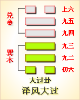

第二十八卦初六爻详解 第二十八卦九二爻详解 第二十八卦九三爻详解
第二十八卦九四爻详解 第二十八卦九五爻详解 第二十八卦上六爻详解
周易第二十八卦 大过 泽风大过 兑上巽下
大过：栋桡，利有攸往，亨。
彖曰：大过，大者过也。栋桡，本末弱也。刚过而中，巽而说行，利有攸往，乃亨。大过之时义大矣哉!
象曰：泽灭木，大过;君子以独立不惧，(辶豚)世无闷。
初六：藉用白茅，无咎。象曰：藉用白茅，柔在下也。
九二：枯杨生稊，老夫得其女妻，无不利。象曰：老夫女妻，过以相与也。
九三：栋桡，凶。象曰：栋桡之凶，不可以有辅也。
九四：栋隆，吉;有它吝。象曰：栋隆之吉，不桡乎下也。
九五：枯杨生华，老妇得士夫，无咎无誉。象曰：枯杨生华，何可久也。老妇士夫，亦可丑也。
上六：过涉灭顶，凶，无咎。象曰：过涉之凶，不可咎也。
大过卦卦象，泽风大过卦的象征意义
大过卦，是异卦相叠，巽在下卦，兑在上卦。兑为泽、为悦，巽为木、为顺，泽水淹舟，遂成大错。阴阳爻相反，阳大阴小，行动非常，有过度之意，内刚外柔。
过，是指过度，超过界限。大过卦位于颐卦之后，《序卦》之中这样说道：“不养则不可动，故受之以大过。”养育有成，才可以行动，一行动就可能过当。
《象》曰：泽灭木，大过。君子以独立不惧，遁世无闷。《象》中这段话的意思是说：本卦上卦为兑为泽，下卦为巽为木，上兑下巽，泽水淹没木舟，这是大过的卦象。君子观此卦象，以舟重则覆为戒，领悟到遭逢祸变，应守节不屈，稳居不仕，清静淡泊。
大过卦象征极为过分，属于中下卦。《象》中这样来断此卦：夜晚梦里梦金银，醒来仍不见一文，目下只宜求本分，思想络是空劳神。
此卦卦名为大过。《说文》中说：“过，度也。”可见“过”的意思便是经过、度过的意思。其引申义便是过度、超越的意思。人们生活富裕了，就会追求饮食文化，可是这样会造成人们过度追求享乐，怎么才能避免继续这样呢?这就需要思想与行为的大超越。所以顿卦之后是大过卦。《序卦传》中说：“不养则不可动，故受之以大过。”这是从另一个角度对颐卦的卦序进行解释，也就是说人只有吃好了，干活才有力气。
卦画：大过卦的卦画上下分别为一个阴爻，中间为四个阳交，与颐卦的卦画正好阴阳相反，两卦互为旁通。
从卦象上进行分析，两头的阴爻象征木头的两头软弱，中间象征坚实而厚重，这样的一根木头如果做成栋梁很容易弯曲，所以卦辞中会有“栋烧”的词句。从上下卦来看，大过卦上卦为兑为泽，下卦为巽为木，大泽湮灭了木头便是大过卦的卦象。从这一卦象上看，大过卦有灭顶之灾的意思。《系辞传•下》中说：“古之葬者，厚衣之以薪，葬之中野，不卦不树，丧期无数，后世圣人易之以棺椁，盖取诸大过。”就是说上古时期的圣人根据大过卦的卦象，改变了人们埋葬死人的习惯，用棺材盛殓死人下葬。其实这只是大过卦卦象的一个方面。大过卦两头虚中间实，又像一根独木桥，所以大过也有渡过的意思。另外，大过卦上卦兑为泽，也含有湿气的意思，下卦巽为木，代表树木，全卦也有栋梁因受潮而弯曲的含义。
关键词：周易,大过卦,泽风大过,兑上巽下
大过卦：屋梁被压弯了。有利于出门行旅，亨通。
初六：用白茅铺垫以示恭敬，没有灾祸。
九二：枯萎的杨树重新发芽，老头儿娶了年轻女子为妻。没有什么不吉利。
九三：屋梁压弯了，凶险。
九四：屋梁隆起不弯，吉利。但有意外事故，不妙。
九五：枯萎的杨树重新开花，老妇人嫁了一个年轻丈夫。没有灾祸也没有好处。
上六：渡河涉水，水淹过了头顶，凶险，但没有灾祸。
①大过是本卦的标题。大的意思是太，大过就是太过。全卦的内容是讲一些过了头的事，标题是按内容取的。
②橈(nao)：弯曲。
③藉：席，用作铺垫。白茅：一种柔软洁白，较贵重的草。
④梯：用作“荑”，意思 是草木新生、发芽。
⑤隆：中间高起来。
③它：指意外的事故。
(7)灭顶：水淹过头顶。